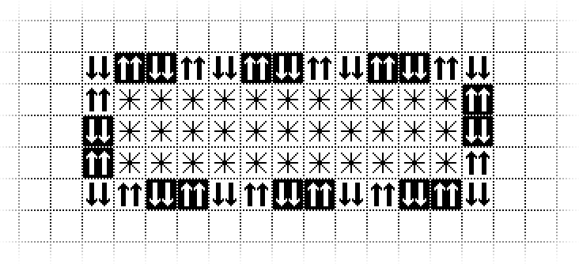

Painting with Interactive Pixels
Originally developed by NTNU Prof. Dag Svanæs, 1998
About
Dag Svanæs’s Painting with Interactive Pixels is a small pixel-based drawing environment in which each color of “ink” has its own interactive behavior. In its Play mode, the painted cells respond like connected pushbuttons, toggles, and one-way switches. I saw Svanæs demo PIP in early 1998 and it had a significant influence on my creative trajectory. For related work, see Sandspiel (2018) by Max Bittker, A-Paint (1992) by John Maeda, and the game Noita.
How To Use PIP
- Select the Pencil tool to enter Draw mode.
- Choose an ink from the palette, then paint on the grid.
- Select the Arrow tool to enter Play mode.
- Click or press connected interactive pixels to see their behavior propagate.
To get started, try making this pattern and enjoy the marquee!
